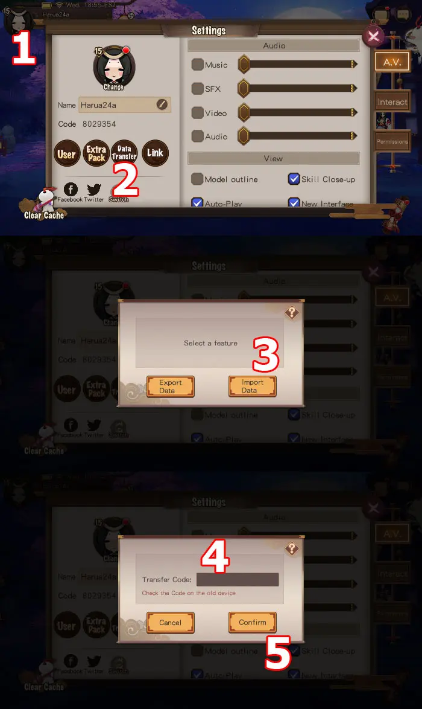

Onmyoji Global
The way to receive the purchased account is always as a guest account
When you purchase an Onmyoji Global account, you will receive a data transfer code after making the payment. You can then access the game on either an iOS or Android phone and create a level 1 guest account, level 2 guest account (or any unused clone account). Afterward, click on Avatar > Data Transfer > Import Data, and enter the data transfer code to receive the purchased account. As long as the account used for the data transfer is a guest account, the received account will remain a guest account (unlinked).

RR-Team